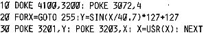
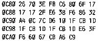

Nascom Journal |
Oktober 1981 · Ausgabe 10 |
Es ist auch möglich, die Graphik durch den Modulator abzubilden. Dazu muß auf der Hauptplatine R 68 herausgenommen werden. Statt diesem wird der Videoausgang der Graphikplatine an die Basis von Tr 4 angeschlossen. Der 5V-Anschluß an R2 und das Synchronisationssignal entfallen dann. Da das Text- und Graphik-Signal gemischt wird, kann man auch bei eingeschaltener Graphik den normalen Text auf dem Bildschirm lesen. Mit R1 wird das Helligkeitsverhältnis zwischen Graphik und Text geregelt.
Die Hälfte der gespeicherten Graphik wird doppelt abgebildet, weil der Video-Teil in horizontaler Richtung 384 Bildpunkte abbildet, die Graphik aber nur 256 gespeichert hat.
Mit folgendem Programm kann eine Sinuslinie gezeichnet werden, wenn die Graphik vorher mit einem Copy-Befehl gelöscht wird.
Das Einschalten der Graphik geschieht über Port0 Bit 2 in Zeile 10.
Maschinensprache – Unterprogramm zum Punkt-setzen-rücksetzen
Das Byte in Zelle C8E bestimmt, ob das adressierte Bit gesetzt (C6) oder rückgesetzt werden soll (86).
+ + +
Suche BASF Mini-Floppy-Laufwerk
(Typ 6106
o.ä.)
Ulrich Wallis _____/_____(nach 17°°)
Wer hat Interesse an einer Mitarbeit beim Bau kleiner (preiswerter!)
Elektronikgeräte für Behinderte oder ähnliche Anwendungen? Wer hat
eventuell schon Erfahrungen auf diesem Gebiet?
H.Grasl _____/____ (ab 18°°)
______. _ , ____ __________
APPLE II
Europlus 48K mit leerem Hobbyboard,Grafikdefinitionshilfe und
Spielprogrammen DM 2 800.–
L. Bayer ___/_______
Das Bubble-Sortierverfahren ist zwar vom Programmaufbau sehr kurz, in der Ausführung aber sehr langsam. Dies ist besonders bei einer ungünstigen Mischung der Elemente der Fall, wenn nur ein einziges Element im Feld aufsteigen muß. Das Feld muß dann n-1 mal durchlaufen werden.
Eine kleine Verbesserung bietet der Shaker Algorithmus. Der Zeiger wandert abwechselnd von oben nach unten und dann umgekehrt über den Arrayinhalt.
| Seite 24 von 28 |
|---|